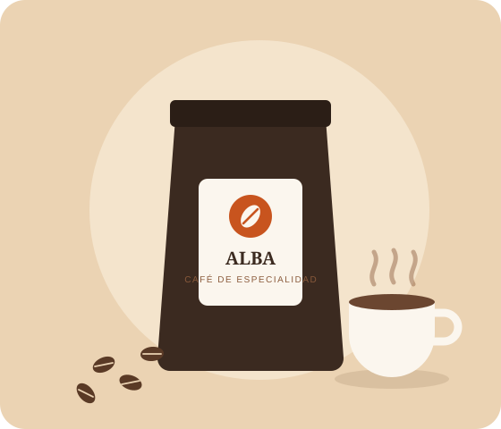

Tostado cada semana
Café de especialidad, tostado en Extremadura
Granos seleccionados de pequeños productores, tostados en lotes cortos y enviados en 24 horas para que llegue a tu taza en su mejor momento.
- Envío en 24 h
- Tostado a pedido
- Pago seguro

Aquí irá el resto de la página (productos, suscripción, pie...). Lo construiremos en los siguientes pasos.